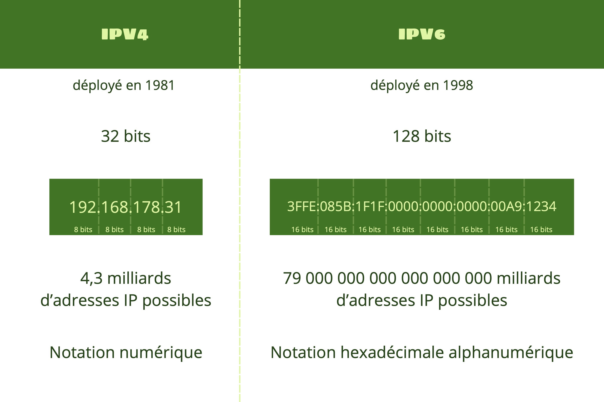
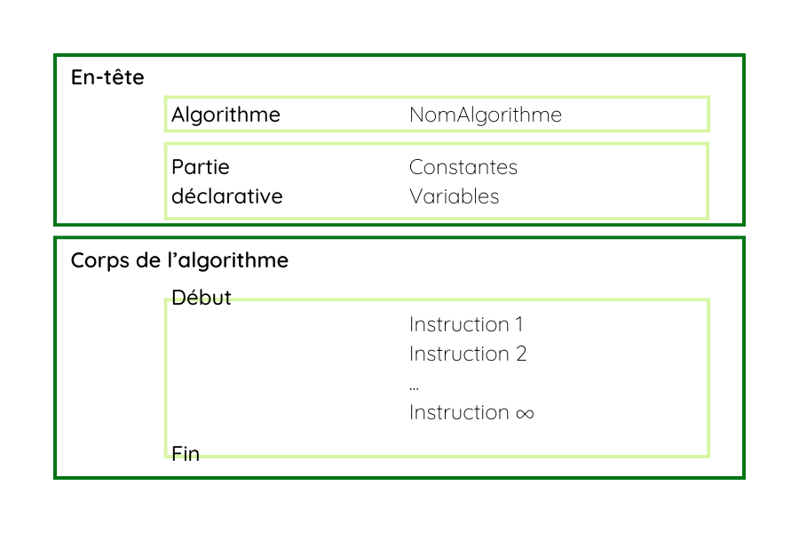
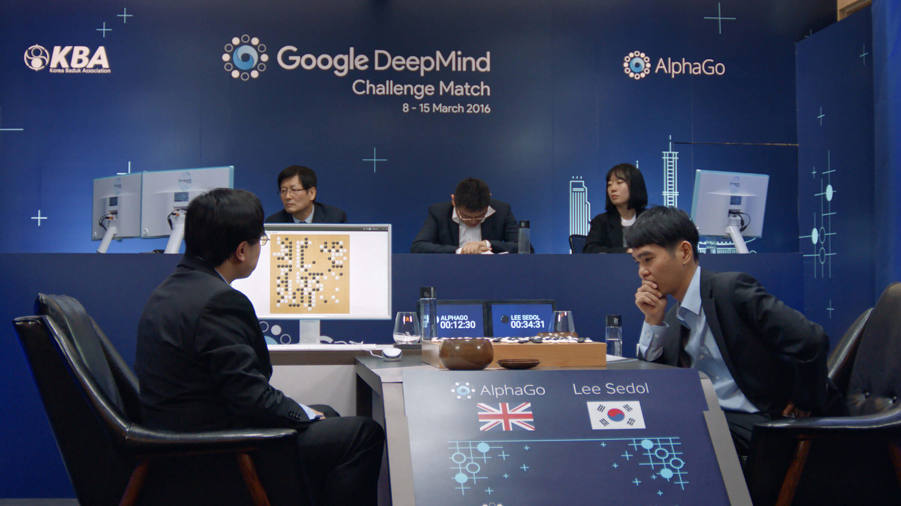
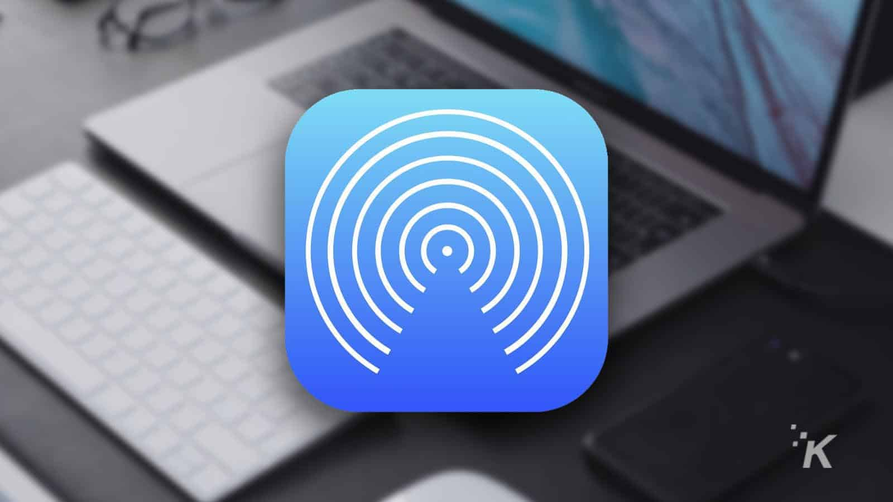
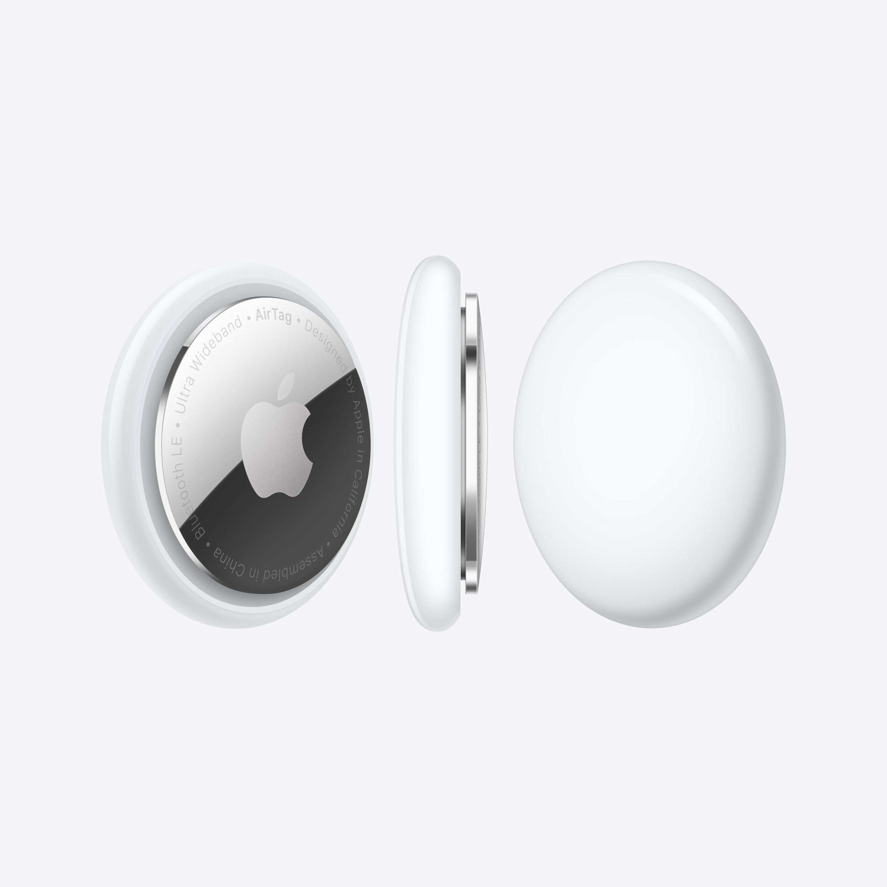
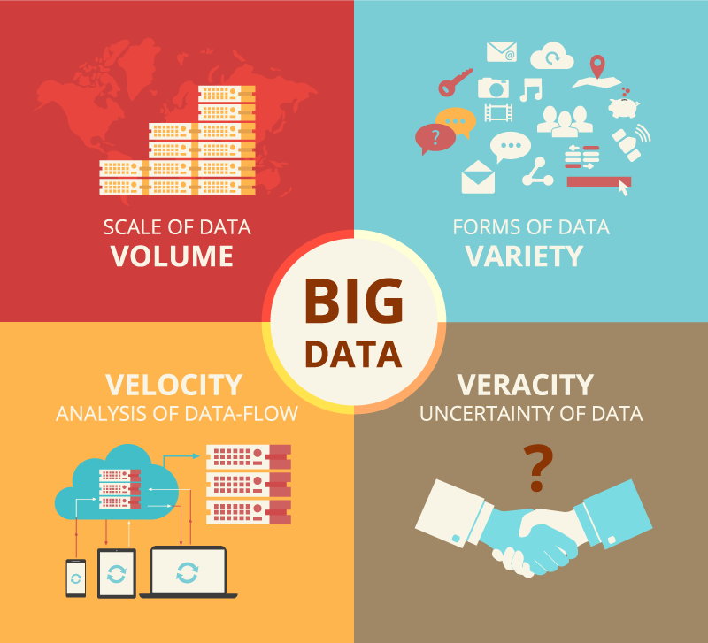
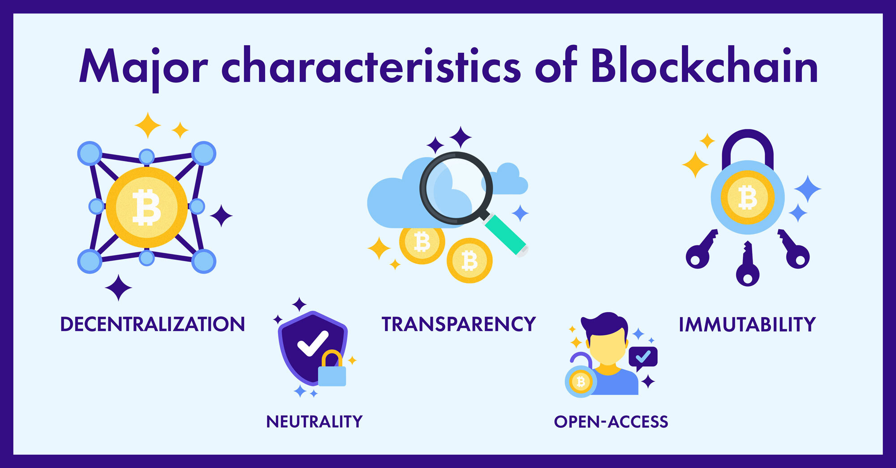
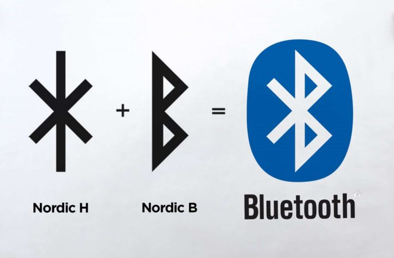

Adresse IP

Une adresse IP (Internet Protocol) est un identifiant unique attribué à chaque appareil connecté à Internet
(ordinateur, smartphone, routeur, etc.). Elle permet aux données de circuler correctement sur le réseau,
un peu comme une adresse postale pour le courrier.
Cette norme a été créée dans les années 1970 avec l’émergence du protocole TCP/IP, utilisé par ARPANET, l’ancêtre d’Internet.
Ton smartphone reçoit une adresse IP temporaire quand il se connecte au Wi-Fi.
Les sites web ont une adresse IP qu’un navigateur traduit grâce au DNS.
Quand tu tapes "www.google.com" dans ton navigateur, ton ordinateur utilise des serveurs DNS pour
traduire cette adresse en une adresse IP (ex. : 172.217.19.14) et ainsi accéder au site web.
Algorithme

Un algorithme est une suite d’instructions logiques pour résoudre un problème.
Le mot vient du mathématicien perse Al-Khwarizmi au IXe siècle. Aujourd’hui, les algorithmes sont au cœur des logiciels.
L’algorithme de YouTube choisit quelles vidéos te proposer en fonction de tes préférences.
Un GPS utilise un algorithme pour calculer l’itinéraire le plus rapide.
AlphaGo

AlphaGo est une IA créée par DeepMind en 2015 pour jouer au jeu de Go, considéré comme plus complexe que les échecs.
C’est la première IA à battre un champion mondial humain, Lee Sedol, en 2016.
AlphaGo prédit les meilleurs coups à partir de millions de parties.
Son architecture combine deep learning et apprentissage par renforcement (basée sur la méthode d'essai-erreur,
l’agent autonome explore différentes actions pour découvrir celles qui donnent les meilleurs résultats selon un objectif fixé).
Antivirus
Un antivirus est un programme conçu pour détecter et neutraliser des logiciels malveillants.
Le premier antivirus est apparu dans les années 1980 pour contrer les virus sur disquettes.
Norton ou Avast sont des antivirus populaires depuis des décennies.
Un antivirus empêche les ransomwares de chiffrer vos fichiers.
AirDrop

Lancé par Apple en 2011, ce service permet d’échanger des fichiers entre appareils Apple via Bluetooth et Wi-Fi.
C’est une solution simple née du besoin de partage rapide sans câble.
Tu envoies des photos depuis ton iPhone vers ton iMac sans passer par internet.
Des étudiants s’en servent pour échanger des documents en classe.
En cryptomonnaie, le terme "airdrop" a un tout autre sens. Il corresond à l'envoi gratuit de jetons cryptomonnaies ou de NFT à des utilisateurs, souvent pour promouvoir un projet ou récompenser une communauté.
Un projet envoie des tokens aux détenteurs d’une autre cryptomonnaie.
Un utilisateur reçoit un NFT via airdrop après avoir utilisé une plateforme.
AirTag

Lancé par Apple en 2021, l’AirTag est un petit traceur Bluetooth qui permet de localiser des objets perdus via le réseau d’appareils Apple.
Il s’inscrit dans l’évolution des objets connectés personnels.
Tu retrouves tes clés perdues grâce à l’AirTag qui sonne quand tu les cherches.
Une valise égarée à l’aéroport peut être retrouvée grâce au signal de l’AirTag.
Big Data

Le terme “Big Data” est apparu dans les années 2000 pour désigner l’explosion du volume de données générées
par Internet et les objets connectés.
Il s’appuie sur de nouveaux outils d’analyse capables de traiter ces masses d’informations.
Amazon analyse le Big Data pour te proposer des produits ciblés.
Les scientifiques étudient des données climatiques massives pour anticiper le réchauffement.
Blockchain
La blockchain est une technologie de stockage et de transmission d’informations, transparente et sécurisée, sans autorité centrale. Elle fonctionne comme un grand registre numérique où chaque information (appelée transaction) est regroupée dans un bloc. Chaque nouveau bloc est lié au précédent de manière cryptographique, formant une chaîne (d’où le nom blockchain, "chaîne de blocs"). Une fois un bloc ajouté, il ne peut plus être modifié, ce qui rend la blockchain infalsifiable. Elle est décentralisée : des milliers d’ordinateurs dans le monde (appelés nœuds) vérifient ensemble l’exactitude des informations.
Une transaction en Ether est enregistrée sur la blockchain Ethereum, et peut être consultée publiquement.
Une œuvre numérique en NFT est authentifiée et tracée grâce à la blockchain.
Bluetooth

Bluetooth, créé en 1994 par le suédois Sven Mattisson et le néerlandais Jaap Haartsen l'ont développée au sein de
l'entreprise suédoise Ericsson, est une technologie sans fil à courte portée.
Son nom vient du roi viking Harald à la dent bleu (en danois Harald Blåtand, en anglais Harald Bluetooth),
unificateur des tribus nordiques, métaphore de la connexion entre appareils.
Le symbole du bluetooth regroupe les anciennes runes nordiques H et B.
Ton enceinte Bluetooth peut se connecter sans fil et sans internet à ton téléphone.
Une montre connectée envoie les données de tes pas à ton smartphone grâce au Bluetooth.
Cryptomonnaie
Les cryptomonnaies sont apparues avec le Bitcoin en 2009, créé par une personne (ou groupe)
sous le pseudonyme Satoshi Nakamoto.
Elles fonctionnent sans banque centrale, grâce à la blockchain.
Certaines, appelées stablecoins, sont liées à une monnaie traditionnelle (comme l’euro ou le dollar)
pour éviter les fortes variations de prix.
Bitcoin est la première. Ethereum, apparu en 2015, introduit les "smart contracts".
Tu achètes un NFT en payant avec de l’Ethereum.
Bitcoin peut être stocké dans un wallet numérique personnel.
L’USDC est un stablecoin, sa valeur reste proche de 1 dollar.
Cybersécurité

La cybersécurité est née avec l’informatique, mais a pris de l’ampleur depuis les années 2000 face aux
cyberattaques croissantes.
Elle protège les données, les systèmes et les utilisateurs.
Une entreprise met en place un pare-feu pour bloquer les intrusions.
L’ANSSI (Agence nationale de la sécurité des systèmes d'information) est l’agence française en charge de la cybersécurité nationale.
Deep Learning

Le deep learning, popularisé dans les années 2010, est un sous-domaine de l’IA qui simule le cerveau humain à l’aide de réseaux de neurones artificiels.
Ses racines remontent aux années 1950 avec les premiers perceptrons.
Un filtre Instagram reconnaît automatiquement les visages.
Les voitures autonomes interprètent les panneaux grâce au deep learning.
DNS

Le DNS (Domain Name System) est un système qui traduit les noms de sites web (comme google.com) en adresses IP compréhensibles par les ordinateurs.
Quand tu tapes un site dans ton navigateur, le DNS trouve son adresse IP.
Sans DNS, tu devrais retenir des suites de chiffres à la place des noms de domaine.
Intelligence Artificielle

L’IA, terme apparu en 1956, désigne les systèmes capables d’accomplir des tâches qui nécessitent normalement l’intelligence humaine.
Elle est passée de simples règles à des modèles capables d’apprendre (machine learning).
Un chatbot comprend tes questions et y répond automatiquement.
L’IA classe tes e-mails selon leur importance.
Internet

Internet est né dans les années 1960-70 sous le nom d’ARPANET, un projet militaire américain reliant les universités pour échanger des données.
Le réseau s’est ouvert au public dans les années 1990 et est devenu mondial.
Tu te connectes à un site web via une adresse URL.
Les mails transitent par des serveurs connectés à Internet.
Internet des objets

L’idée d’objets connectés date des années 1980, mais le terme “Internet des objets” est popularisé en 1999.
Il désigne les appareils intelligents interconnectés capables de communiquer via Internet.
Un bracelet connecté qui mesure ton sommeil.
Une maison intelligente allume les lumières selon tes habitudes.
Métavers

Le mot “métavers” vient du roman de science-fiction Snow Crash (1992).
C’est un monde virtuel immersif et interactif, rendu possible aujourd’hui par la VR, l’AR et la blockchain.
Tu crées un avatar pour visiter un musée dans le métavers.
Des marques y vendent des vêtements virtuels.
NFT

(Non-Fungible Token)
Les NFT sont apparus avec Ethereum en 2017.
Ils permettent d’attribuer une valeur unique et traçable à des objets numériques (image, musique, etc.) sur la blockchain.
Une œuvre numérique vendue 1 million de dollars sous forme de NFT.
Des artistes créent et vendent des éditions limitées numériques.
NFC

(Near Field Communication)
Le NFC est une technologie de communication sans fil à très courte portée (quelques centimètres).
Elle permet à deux appareils de s’échanger des données simplement en les approchant. On l’utilise
surtout pour les paiements sans contact, les titres de transport ou le partage rapide d’informations.
Tu approches ton smartphone d’un terminal pour payer, sans carte ni code.
Tu transfères une photo à un ami en collant vos téléphones via NFC.
Ordinateur quantique

C’est un type d’ordinateur qui fonctionne selon les lois de la mécanique quantique. Contrairement aux ordinateurs classiques qui utilisent des bits (0 ou 1), l’ordinateur quantique utilise des qubits, qui peuvent être 0 et 1 en même temps. Cela lui permet d’explorer plusieurs solutions à un problème à la fois, et de résoudre certains calculs bien plus rapidement.
Il pourrait simuler le comportement d’une molécule pour créer de nouveaux médicaments.
Il peut résoudre des problèmes d’optimisation complexes, comme planifier des milliers de livraisons.
Perceptron
Inventé en 1957 par Frank Rosenblatt, le perceptron est un modèle mathématique inspiré du neurone biologique.
C’est l’un des premiers algorithmes d’apprentissage automatique, base des réseaux de neurones modernes.
Un perceptron peut apprendre à distinguer des photos de chats et de chiens.
Il ajuste ses poids à chaque erreur pour mieux classer les données.
Réalité augmentée (AR)

Popularisée par les Google Glass ou Pokémon Go, l’AR est née dans les années 1990.
Elle enrichit la vision du réel avec des éléments numériques.
Une appli montre comment un meuble rendrait dans ton salon.
Un chirurgien visualise des informations superposées pendant une opération.
Réalité virtuelle (VR)

La VR a été imaginée dès les années 1960 (avec le casque "Sword of Damocles"), mais elle s’est démocratisée dans les années 2010.
Elle immerge complètement l’utilisateur dans un monde numérique.
Tu visites virtuellement un appartement avant de l’acheter.
Tu explores une autre planète dans un jeu vidéo immersif.
Smart Contract

Un Smart Contract (ou « contrat intelligent ») est un programme informatique qui repose sur la technologie blockchain. Il exécute automatiquement les termes d’un contrat dès que les conditions définies sont remplies. Ces contrats sont infalsifiables car une fois inscrits sur la blockchain, leurs règles ne peuvent plus être modifiées. Cela garantit transparence, fiabilité et absence d’intermédiaire (comme un notaire ou une banque).
Un artiste peut vendre une œuvre sous forme de NFT via un smart contract : dès que l’acheteur paie, l’œuvre est automatiquement transférée, sans intervention humaine.
Token

Un token est un actif numérique associé à une blockchain. Il peut avoir plusieurs fonctions : représenter une monnaie (comme un jeton d’échange), un droit (comme un droit de vote dans un projet), un bien (comme un objet dans un jeu), ou un certificat de propriété (comme un NFT).
Un token permet d’accéder à une plateforme en ligne réservée à ses détenteurs.
Certains tokens donnent un pouvoir de décision dans une communauté en ligne.
Véhicule autonome

L’idée existe depuis les années 1930, mais les premiers prototypes sérieux sont apparus dans les années 2000.
Ils combinent IA, caméras et capteurs pour se déplacer sans conducteur.
Une navette autonome circule en zone urbaine.
Le véhicule adapte sa vitesse en fonction des limitations détectées.
Virus informatique

Un virus informatique est un programme malveillant conçu pour se propager d’un appareil à un autre, souvent à l’insu de l’utilisateur, et perturber le fonctionnement du système.
Le premier virus, “Creeper”, est apparu en 1971. Apparaît ensuite le premier antivirus “Reaper”.
Un virus se cache dans une pièce jointe d’e-mail et infecte ton ordinateur quand tu l’ouvres.
Un ransomware chiffre tes données et demande une rançon pour les débloquer.
Wallet numérique personnel

Un wallet numérique personnel est un outil, souvent sous forme d’application ou de clé physique, qui permet de stocker, envoyer et recevoir des cryptomonnaies comme le Bitcoin ou l’Ethereum.
Il est apparu avec le Bitcoin en 2009 pour offrir à chacun le contrôle direct de ses actifs numériques, sans intermédiaire bancaire.
Tu utilises un wallet sur ton téléphone pour payer en cryptomonnaie dans un magasin.
Tu sécurises tes fonds avec un wallet physique, coupé d’internet pour éviter les piratages.
MetaMask est un portefeuille logiciel de cryptomonnaie utilisé pour interagir avec la blockchain Ethereum.
Wi-Fi

Le Wi-Fi est une technologie qui permet à des appareils (ordinateur, téléphone, tablette…) de se connecter à Internet sans câble. Il fonctionne grâce à un signal radio envoyé par une box ou un routeur. Le Wi-Fi est devenu indispensable à la maison, au travail ou dans les lieux publics pour accéder au web librement et sans fil.
Tu connectes ton ordinateur au Wi-Fi pour regarder une série chez toi.
Dans un hôtel, le Wi-Fi te permet de télétravailler sans utiliser ton forfait mobile.